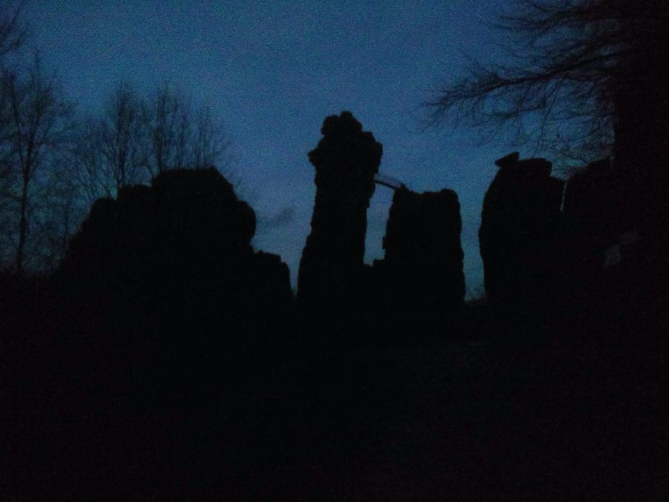

𝔈𝔵𝔱𝔢𝔯𝔫𝔰𝔱𝔢𝔦𝔫𝔢
THE EXTERNSTEINE: WHAT LEGENDS ARE MADE OF
It is no surprise that these rocks have inspired countless folk legends. Even today, there are some aspects of the gigantic sandstone pillars which are not fully understood. The origin of their name, for starters. The medieval “Elsternsteine” (magpie rocks) is probably a corruption of an earlier name. In any case, everything we do know about the stones can be discovered at the information centre, which is the recommended first port of call for visitors to this extraordinary attraction. The exhibition is divided into ten sections, which provide an overview of the archaeological, cultural and natural history of the Externsteine. There is also an interactive section with videos and animations of the rocks and their natural environment.